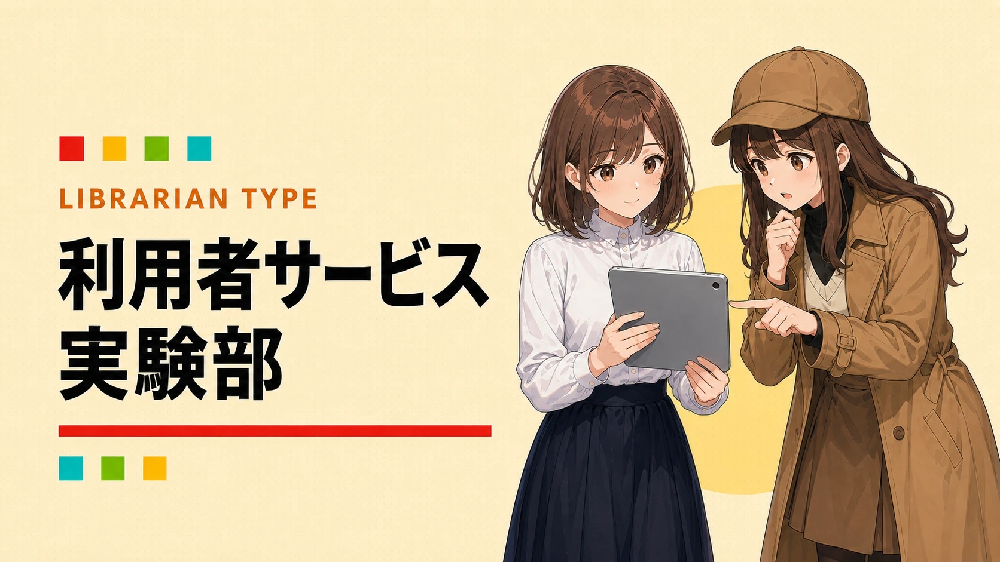

あなたの図書館員タイプは……
利用者サービス実験部


「こうしたら？」は、小さく試す。
「こうした方が使いやすいかも」と思ったら、小さく試してみたくなるタイプ。案内、展示、サービス、Webなどを試しながら改善していきます。
LIVE STATS / みんなの診断結果
このタイプだった人
%
診断結果
順位
これまでに集まった診断結果を集計しています。
こんなこと、ちょっと好きかも
- 手作りの試作版
- 利用者の反応をすぐ見る
- 小さな変化の手応え
TYPE CHECK / YOUR TURN
あなたなら、どの図書館員タイプ？
YAWATOSHO GAMES / PICK 01
あなたにおすすめのYAWATOSHO GAME
GAME / 01